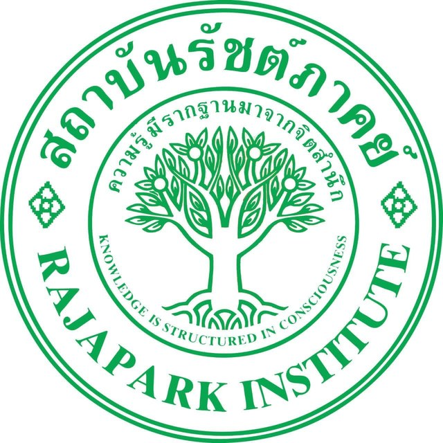

ED 518 · กลุ่มที่ 1แนวคิด ทฤษฎี หลักการ และระบบการนิเทศการศึกษา
จากการพัฒนาครู สู่คุณภาพการเรียนรู้ของผู้เรียน
รายวิชา ED 518 การนิเทศการศึกษาและการพัฒนาหลักสูตร
หลักสูตรศึกษาศาสตรมหาบัณฑิต สาขาการบริหารการศึกษา
สถาบันรัชต์ภาคย์|กลุ่มที่ 1|ปีการศึกษา 2569
กรณีศึกษา: โรงเรียนบ้านสุไหงโก-ลก ปีการศึกษา 2569
แต่…เรารู้ได้อย่างไรว่าผู้เรียนพัฒนาขึ้นจริง?
Educational Supervision
กระบวนการทำงานร่วมกันระหว่างผู้นิเทศและผู้รับการนิเทศ เพื่อพัฒนาคุณภาพการจัดการเรียนรู้ตามหลักสูตร โดยมุ่งผลการเรียนรู้ของผู้เรียนและการพัฒนาตนเองของครูอย่างต่อเนื่อง
Harris (1985); Glickman & Gordon (1987)
4 ระดับของการพัฒนา
พัฒนาวิธีสอนและการสะท้อนคิด
มุ่งพัฒนาผลการเรียนรู้
ใช้ข้อมูลห้องเรียนปรับปรุงการนำหลักสูตรไปใช้
สร้างระบบพัฒนาวิชาชีพภายในองค์กร
วิวัฒนาการแนวคิดการนิเทศ
แนวคิดเหล่านี้ไม่ได้แยกขาดจากกัน
4 ฐานทฤษฎีสำคัญ
| ทฤษฎี | สิ่งที่ช่วยอธิบาย |
|---|---|
| Human Relations | ความไว้วางใจและแรงจูงใจ |
| Systems Theory | ความสัมพันธ์ขององค์ประกอบและ Feedback |
| Adult Learning | ประสบการณ์และการมีส่วนร่วมของครู |
| Reflective Practice | การเรียนรู้ผ่านการสะท้อนคิด |
Developmental Supervision
ผู้นิเทศชี้แนะ ให้แนวทางและตัวอย่างชัดเจน
ผู้นิเทศและครูร่วมวิเคราะห์และตัดสินใจ
ครูกำหนดเป้าหมายและแนวทาง โดยผู้นิเทศรับฟังและตั้งคำถาม
เป้าหมาย: พัฒนาครูให้คิดและแก้ปัญหาการสอนด้วยตนเอง
Glickman & Gordon (1987)
Clinical Supervision
หลักการ: สังเกตจริง → วิเคราะห์ร่วมกัน → ปรับปรุงการสอน
Goldhammer (1969)
PLC เป็นกลไกสนับสนุนการนิเทศ แต่ไม่ใช่สิ่งเดียวกัน
Six Principles of Educational Supervision
หัวใจ: การนิเทศต้องเป็นกระบวนการพัฒนา ไม่ใช่กิจกรรมครั้งเดียว
Systems Approach: IPOF + Outcomes
PIDRE — Five-Step Supervision Process
กระบวนการที่ต่อเนื่อง และใช้ข้อมูลเพื่อการปรับปรุง
Curriculum–Supervision Feedback Cycle
Case Study: โรงเรียนบ้านสุไหงโก-ลก
สังกัดสำนักงานเขตพื้นที่การศึกษาประถมศึกษานราธิวาส เขต 2
บริบทสำคัญ: การจัดการศึกษาแบบเรียนรวม
ข้อมูลปีการศึกษา 2569
Internal Supervision Structure
6 ขั้นตอนการนิเทศภายใน
Reading Comprehension: ปัญหาที่ต้องพัฒนา
จับใจความสำคัญจากเรื่องที่อ่านไม่ได้
แยกประเด็นสำคัญกับรายละเอียดสนับสนุนไม่ชัด
สรุปเรื่องด้วยภาษาของตนเองไม่ได้
ขาดแรงจูงใจในการอ่าน
กิจกรรมการสอนเน้นตอบคำถามมากกว่าฝึกคิดวิเคราะห์
คำถาม: การนิเทศจะช่วยครูปรับวิธีสอนอย่างไร?
Reading Development Approach
ข้อค้นพบ: ผลการดำเนินงาน ≠ ผลการเรียนรู้
Root Cause Analysis
การพัฒนาต้องมองปัจจัยที่สัมพันธ์กัน
5 ข้อจำกัดในการนิเทศ
Role Conflict in Educational Supervision
ความเสี่ยง: ครูอาจไม่กล้าเปิดเผยปัญหาจริง
โจทย์สำคัญ: จะออกแบบระบบนิเทศให้ตอบทั้ง 3 ช่องว่างได้อย่างไร?
PIDRE-D
การนิเทศตามระดับพัฒนาการของครูด้วยการโค้ช Lesson Study และวิดีโอ
โครงสร้างกระบวนการนิเทศอย่างเป็นระบบ
เลือกวิธีนิเทศตามระดับพัฒนาการของครู
Research Evidence Supporting PIDRE-D Components
Kraft et al. (2018)
มีหลักฐานการทดลองแบบสุ่มในบริบทการเรียนรู้เรื่องเศษส่วน
Lewis & Perry (2017)
มีงานศึกษาผลการพัฒนาการสอนและผลสัมฤทธิ์ผู้เรียน
Allen et al. (2011)
หลักฐานสนับสนุนแต่ละวิธี ไม่ใช่ผลการทดลอง PIDRE-D
หลักคิด: เข้าใจครู และสร้างความไว้วางใจก่อนเริ่มนิเทศ
D — Doing: Differentiated Supervision
โค้ชตัวต่อตัว แบบชี้แนะ พร้อมการสาธิต
ร่วมออกแบบบทเรียน เปิดชั้นเรียน และสังเกตร่วมกัน
วิเคราะห์วิดีโอการสอนของตนเองแบบไม่ชี้นำ และนำกลุ่ม Lesson Study
เป้าหมาย: พัฒนาความสามารถในการกำกับการเรียนรู้ทางวิชาชีพของครู
PIDRE-D Implementation Tools
พัฒนาจากระบบเดิม และตรวจ IOC ก่อนใช้เครื่องมือใหม่จริง
Proposed Success Indicators
| ตัวชี้วัด | เป้าหมายปีแรก |
|---|---|
| ครูได้รับการนิเทศครบตามแผน | ≥95% |
| ครูระดับ 1–2 เลื่อนขึ้นหนึ่งระดับ | ≥20% |
| ข้อเสนอแนะที่ครูนำไปใช้จริง | ≥70% |
| ครูเห็นว่าการนิเทศเป็นการช่วยเหลือ | ค่าเฉลี่ย ≥3.51/5 |
| ผลการเรียนรู้ของผู้เรียน | หลังเรียนสูงกว่าก่อน; ≥70% ผ่านเกณฑ์ 60% |
ทุกตัวเลขเป็นค่าเป้าหมายที่เสนอ ไม่ใช่ผลการทดลองจริง
Risks & Safeguards
| ความเสี่ยง | แนวทางลดความเสี่ยง |
|---|---|
| ครูรู้สึกถูกตีตรา | ไม่เปิดเผยระดับรายบุคคล |
| จัดระดับครูคลาดเคลื่อน | ผู้นิเทศ 2 คนร่วมพิจารณา |
| การบันทึกวิดีโอกระทบความเป็นส่วนตัว | ขอความยินยอม ไม่ถ่ายหน้าผู้เรียน |
| Lesson Study มีข้อจำกัดด้านเวลา | จัดตารางว่างร่วมกัน |
| วิธีนิเทศไม่ตรงกับความคาดหวัง | ทำข้อตกลงร่วมกันก่อนนิเทศ |
One-Semester Pilot Plan
ทดสอบการอ่านก่อนเรียน ประเมินครู จัดระดับ และทำข้อตกลง
ประเมินผล ทบทวนระดับครู และสรุปข้อมูลผู้เรียน
เกณฑ์เสนอเพื่อขยายผล: ผ่านอย่างน้อย 3 จาก 5 ตัวชี้วัด
3 มิติของการพัฒนาสถานศึกษา
นิเทศตามระดับพัฒนาการ สร้างความไว้วางใจ และส่งเสริมการเรียนรู้ร่วมกัน
ติดตามผลการเรียนรู้ ชิ้นงาน และข้อมูลพัฒนาการของผู้เรียน
ใช้ข้อมูลการนิเทศปรับปรุงหน่วยการเรียนรู้ เวลา และเกณฑ์การประเมิน
เป้าหมาย: ระบบนิเทศที่เชื่อมครู ผู้เรียน และหลักสูตร
“ความสำเร็จของการนิเทศไม่ควรจบที่จำนวนครั้ง แต่ต้องติดตามการเปลี่ยนแปลงที่เกิดขึ้นจริง”
ถาม-ตอบและอภิปราย · 30 นาที
ถ้าผู้บริหารต้องทั้งนิเทศและประเมินผลงานครู จะทำอย่างไรให้ครูกล้าเปิดเผยปัญหาการสอน
ความสัมพันธ์ผู้นิเทศ–ผู้รับการนิเทศในสถานศึกษาของท่านตรงกับแนวโน้มใดในตารางที่ 1
การจัดระดับครูตามแนวคิดแบบพัฒนาการมีความเสี่ยงอะไร และจะลดความเสี่ยงอย่างไร
เมื่อครูขาดแคลนและภาระงานมาก ควรนิเทศน้อยคนแต่ลึก หรือนิเทศทุกคนแต่ไม่ลึก
ข้อมูลจากการนิเทศควรมีผลต่อการปรับหลักสูตรสถานศึกษามากเพียงใด และใครควรตัดสินใจ
ชญานิศ สุใจยา. (2567). การพัฒนารูปแบบการนิเทศการทำวิจัยในชั้นเรียนของครูเพื่อพัฒนาคุณภาพเด็กปฐมวัย สู่ความเป็นเลิศ โรงเรียนเทศบาล 4 ฉลองรัตน. วารสารการบริหารและพัฒนา วิทยาลัยพิชญบัณฑิต, 7(2), 50–72.
ธมลวรรณ พูนวัฒนานุกูล และบรรจบ บุญจันทร์. (2568). แนวทางพัฒนาการดำเนินการนิเทศภายในของสถานศึกษา สังกัดสำนักงานเขตพื้นที่การศึกษาประถมศึกษานครราชสีมา เขต 3. วารสารเสียงธรรมจากมหายาน, 11(2), 290–305.
ยุภารัตน์ หาสุข, อรรถพร วรรณทอง, และไพรวัลย์ โคตรตะ. (2568). ความสัมพันธ์ระหว่างทักษะการนิเทศของผู้บริหารสถานศึกษาในยุคดิจิทัลกับพฤติกรรมการสอนของครู สังกัดสำนักงานเขตพื้นที่การศึกษามัธยมศึกษาอุบลราชธานี อำนาจเจริญ. วารสารการบริหารและนิเทศการศึกษา, 16(2), 218–238.
สุชัญญา ลือชา, สุนิสา วงศ์อารีย์, และจิรันธนิน ทองธิราช. (2569). แนวทางการนิเทศการศึกษาแบบร่วมพัฒนาวิชาชีพของผู้บริหารศูนย์การศึกษาพิเศษ กลุ่มเครือข่ายฯ ศูนย์การศึกษาพิเศษ เขตการศึกษา 9. วารสารครุศาสตร์ปัญญา, 5(4), 200–218.
สำนักงานคณะกรรมการข้าราชการครูและบุคลากรทางการศึกษา. (ม.ป.ป.). [เอกสารประกอบการดำเนินการตามหลักเกณฑ์และวิธีการประเมินตำแหน่งและวิทยฐานะของข้าราชการครูและบุคลากรทางการศึกษา]. https://otepc.go.th/th/content_page/download/345/4351/17.html
สามารถ ทิมนาค. (2554). การพัฒนารูปแบบการนิเทศการสอนตามแนวคิดของกลิ๊กแมน เพื่อพัฒนาสมรรถภาพการจัดการเรียนรู้ด้านทักษะการอ่านของครูภาษาไทย. Veridian E-Journal, Silpakorn University, 4(1), 491–512.
อังคณา นาสารี, อดินันท์ แก้วนิล, เอกพัฒน์ เฮืองใสส่อง, และวิรุธน์ บัวงาม. (2569). การพัฒนารูปแบบและประเมินประสิทธิผลการนิเทศภายในเพื่อยกระดับคุณภาพการเรียนการสอน กรณีศึกษาโรงเรียนเตรียมอุดมศึกษาพัฒนาการ อุบลราชธานี. วารสารบริหารการศึกษาบัวบัณฑิต, 26(1), 180–195.
อภิชาติ เนินพรหม. (2566). การพัฒนากระบวนการนิเทศผสมผสานแบบร่วมพัฒนาเพื่อเสริมสร้างสมรรถนะการจัดการเรียนรู้สำหรับครูผู้สอนอาชีวศึกษา สถานศึกษาประเภทวิทยาลัยการอาชีพ ในพื้นที่ภาคใต้. วารสารวิชาการนวัตกรรมและเทคโนโลยี สถาบันการอาชีวศึกษาภาคใต้ 1, 8(1), 13–22.
อลงกรณ์ สุขวัน, ไชยวัฒน์ ชุ่มนาเสียว, ศรีสมพร โคตะคำ, จารุกิตติ์ สายสิงห์, อธิศ ไชยคิรินทร์, ยุทธศาสตร์ กงเพชร, และชาติชาย เกตุพรม. (2567). การพัฒนาภาวะผู้นำทางการนิเทศภายในสถานศึกษาด้วยกระบวนการนิเทศแบบ PIDRE ร่วมกับเทคนิคการสังเกตการสอนเชิงรุกในชั้นเรียนเพื่อเสริมสร้างสมรรถนะการชี้แนะสะท้อนคิดผู้นิเทศ. Journal of Modern Learning Development, 9(2), 380–394.
Allen, J., Pianta, R., Gregory, A., Mikami, A., & Lun, J. (2011). An interaction-based approach to enhancing secondary school instruction and student achievement. Science, 333(6045), 1034–1037.
Burton, W. H., & Brueckner, L. J. (1955). Supervision: A social process (3rd ed.). Appleton-Century-Crofts.
Cogan, M. L. (1973). Clinical supervision. Houghton Mifflin.
DuFour, R. (2004). What is a "professional learning community"? Educational Leadership, 61(8), 6–11.
Glickman, C. D., & Gordon, S. P. (1987). Clarifying developmental supervision. Educational Leadership, 44(8), 64–68.
Glickman, C. D., Gordon, S. P., & Ross-Gordon, J. M. (2009). The basic guide to SuperVision and instructional leadership (2nd ed.). Pearson/Allyn & Bacon.
Goldhammer, R. (1969). Clinical supervision: Special methods for the supervision of teachers. Holt, Rinehart and Winston.
Harris, B. M. (1985). Supervisory behavior in education (3rd ed.). Prentice-Hall.
Hoy, W. K., & Miskel, C. G. (2013). Educational administration: Theory, research, and practice (9th ed.). McGraw-Hill.
Inprasitha, M. (2022). Lesson study and open approach development in Thailand: A longitudinal study. International Journal for Lesson and Learning Studies, 11(5), 1–15. https://doi.org/10.1108/IJLLS-04-2021-0029
Knowles, M. S. (1980). The modern practice of adult education: From pedagogy to andragogy (Rev. and updated ed.). Cambridge Adult Education.
Kraft, M. A., Blazar, D., & Hogan, D. (2018). The effect of teacher coaching on instruction and achievement: A meta-analysis of the causal evidence. Review of Educational Research, 88(4), 547–588. https://doi.org/10.3102/0034654318759268
Lewis, C., & Perry, R. (2017). Lesson study to scale up research-based knowledge: A randomized, controlled trial of fractions learning. Journal for Research in Mathematics Education, 48(3), 261–299.
Ozyildirim, G., & Bilgin Aksu, M. (2016). An investigation on developmental supervision model: Supervisors' and administrators' opinions and teachers' expectations. International Journal of Academic Research in Business and Social Sciences, 6(3). https://doi.org/10.6007/IJARBSS/v6-i3/2055
Schön, D. A. (1983). The reflective practitioner: How professionals think in action. Basic Books.
Sergiovanni, T. J. (1967). Factors which affect satisfaction and dissatisfaction of teachers. Journal of Educational Administration, 5(1), 66–82. https://doi.org/10.1108/eb009610
Sergiovanni, T. J., & Starratt, R. J. (1998). Supervision: A redefinition (6th ed.). McGraw-Hill.
von Bertalanffy, L. (1968). General system theory: Foundations, development, applications. George Braziller.
กลุ่มที่ 1